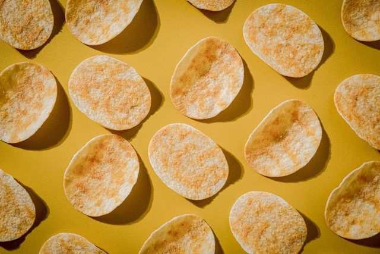
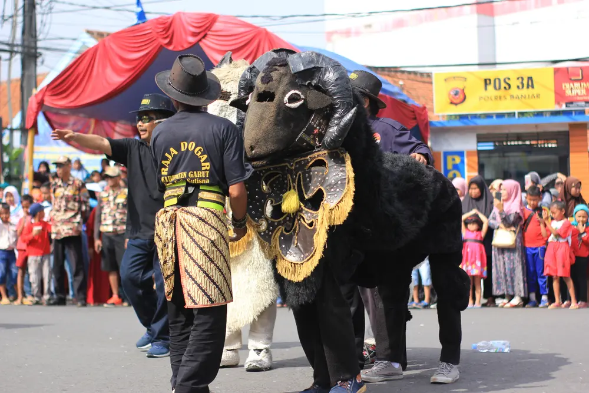

Sejarah

Sejarah Garut tidak bisa dipisahkan dari wilayah Limbangan.
Kabupaten Limbangan merupakan daerah lama yang ibukotanya
dipindahkan ke Garut karena banyak terjadi bencana alam berupa
banjir yang menimpa wilayah ibu kota. Selain itu, belum
berkembangnya pusat pemerintahan karena jauhnya jarak dari sungai
yang menjadi sarana transportasi dan pengairan kebun dan taman. Raja
Muda Adiwijaya (1831-1813) membentuk panitia untuk melihat letak ibu
kota di wilayah baru. Pada akhirnya pilihan jatuh pada tempat yang
dikelilingi pegunungan dan sumber mata air yang mengalir hingga ke
Cimanuk.
Tempat ini berjarak ± 17 km dari kota lama. Saat melihat mata air,
salah satu panitia melihat semak kakarut (bahasa sunda: tergores).
Orang Belanda yang ikut dalam penelitian tersebut tidak dapat meniru
kata tersebut dan menyebutnya Gagarut. Secara umum nama kabupaten
yang menjadi tempat pemindahan ibu kota tidak akan berubah dan tetap
menjadi Kabupaten Limbangan. Namun menurut nasehat para sesepuh,
sebaiknya nama daerah tersebut diganti dengan nama yang baru untuk
menghindari terjadinya kecelakaan di kemudian hari seperti
kebanyakan daerah Limbangan. Dari konflik Kakarut yang oleh Belanda
disebut Gagarut, lahirlah ide nama daerah baru tersebut, “Garut”.
Ulang tahun Garut dirayakan pada tanggal 16 Februari setiap tahun.
Destinasi Wisata

Wisata di Garut terbagi menjadi beberapa Jenis diantaranya :
- Wisata alam
Garut dianugrahi keindahan alam yang luar biasa, termasuk gunung,
kawah, air terjun, Pemandian air panas, dan pantai. beberapa destinasi wisata alam
populer di Garut antara lain:
- Curug Sanghiyang Taraje
- Pantai Satolo
- Pantai Sayang Heulang
- Gunung Papandayan
- Gunung Cikuray
- Cipanas
- Wisata Agro
Garut tidak hanya memiliki keindahan wisata alamnya saja. Tetapi Garut juga memiliki
potensi wisata agro yang menarik untuk dikunjungi. Berikut beberapa destinasi wisata agro di Gerut :
- Kebun Eptilu
- Kampung jeruk Samarang
- Kebun Teh Dayeuhmanggung
- Desa Wisata Ciburial
- Kebon Stroberi cikajang
- Wisata Religi
Selain wisata alam dan agronya garut memeliki wisata religi yang menarik untuk dikunjungi.
Berikut diantaranya :
- Makam Godog sunan Rahmat Suci
- Makam Sunan Pancer
- Makam Syeh Jafar
- Mesjid Agung Garut
- Candi Cangkuang
Makanan khas

Tak hanya disuguhkan dengan keindahan alamnya, tetapi garut juga memeliki
kelezatan Kuliner khasnya. ulai dari makanan basah seperti soto hingga makanan
manis seperti dodol. Apa saja makanan khas Garut? Simak daftarnya berikut ini
1. Burayot
Burayot terdiri dari gula merah dan tepung beras terpilih. Rasa dan bahan
ari burayot ini serupa dengan makanan tradisional lain seperti bernama Ali Agrem.
Namun, karena dibentuk seperti bola kecil dan keriput, maka disebut “ngaburayot”
(sebutan orang Sunda) dan kemudian dikenal dengan nama burayot. Makanan ini banyak
diproduksi oleh masyarakat di Garut, terutama di Leles, karena bahan mudah didapat
dan rasanya lezat.
2. Dodol Garut
Dodol Garut adalah salah satu makanan tradisional yang menjadi ciri khas kota Garut
yang sudah cukup populer, cemilan yang satu ini sangat cocok untuk dijadikan oleh-oleh
karena rasanya yang manis dan teksturnya yang kenyal dan kini sudah terdapat berbagai
varian rasa yang berasal dari buah-buahan. Dodol Garut juga sudah tesedia diberbagai
toko oleh-oleh yang ada di Garut bahkan sudah menyebar di berbagai pusat oleh-oleh yang
ada di Jawa Barat.
3. Chocodot
Chocodot adalah cemilan khas Garut yang terbuat dari cokelat dan dodol Garut, cemilan
yang satu ini cukup kekinian dikalangan anak muda dan sangat cocok untuk dijadikan oleh-oleh
karena chocodot memiliki varian rasa yang banyak dari mulai rasa buah- buahan, rasa cokelat
hingga varian rasa pedas yang berbeda dari dodol pada umumnya.
4. Dorokdok
Dorokdok atau biasa juga disebut dengan kerupuk kulit yang memiliki rasa renyah sehingga
menghasilkan suara dorok-dok ketika dikonsumsi maka dari situlah asal muasal kenapa masyaratkat
Jawa Barat lebih sering menyebut kerupuk kulit dengan sebutan dorokdok. Dorkdok ini diproduksi
di daerah Tarogong dan sekitarnya dengan bahan dasar kulit sapi dan cemilan yang satu ini sering
djadikan oleh-oleh karena cita rasanya yang renyah sehingga banyak diburu oleh para wisatawan.
Seni dan Budaya

Kabupaten Garut merupakan salah satu kabupaten yang terletak di Provinsi Jawa Barat yang dikenal
sebagai Tanah Pasundan. Kabupaten Garut menyimpan kekayaan budaya yang tak kalah banyak. Salah satunya
ada Raja Domba Garut (Raja Dogar) yang sudah cukup melegenda di kalangan masyarakat, khususnya masyarakat pasundan.
Berikut adalah kesenian budaya tradisional dari Kabupaten Garut yang wajib diketahui dan dilestarikan.
1. Raja Dogar
Rajanya Domba Garut atau Raja Dogar adalah seni pertunjukan yang menampilkan dua orang saling beradu sambil
menggunakan kostum menyerupai domba. Mirip barongsai, pertunjukan “raja domba” dimainkan oleh dua orang,
masing-masing di bagian kepala serta badan domba. Seni pertunjukan Raja Dogar diiringi musik tradisional Sunda,
seperti kendang pencak, reog, angklung hingga kulanter. Menariknya, sebagai acara hiburan, Raja Dogar juga kerap
dipentaskan secara nasional hingga internasional.
2. Surak Ibra
Salah satu seni pertunjukan di Garut yang sangat potensial adalah Surak Ibra, yaitu kesenian tradisional yang
berasal dari Wanaraja. Dikenal dengan sebutan Boboyongan, Surak Ibra awalnya dibuat sebagai bentuk sindiran
terhadap pemerintahan Belanda. Ciri khas pertunjukan Surak Ibra ada pada seorang tokoh yang diboyong
(diangkat, dilempar, dan ditangkap kembali) oleh anggota lainnya. Diikuti 30-60 orang, Surak Ibra dimulai dengan
gerakan silat yang dilanjutkan dengan formasi melingkar sambil diiringi musik dan sorak sorai meriah dari para pemain.